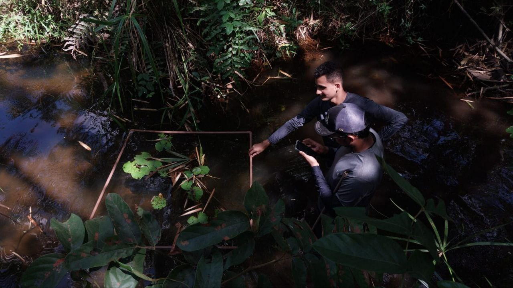
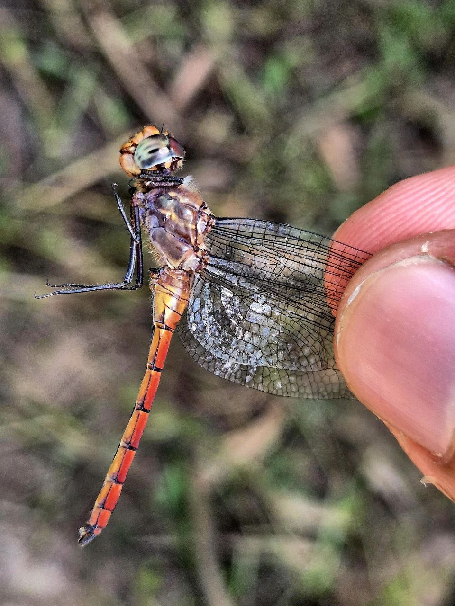
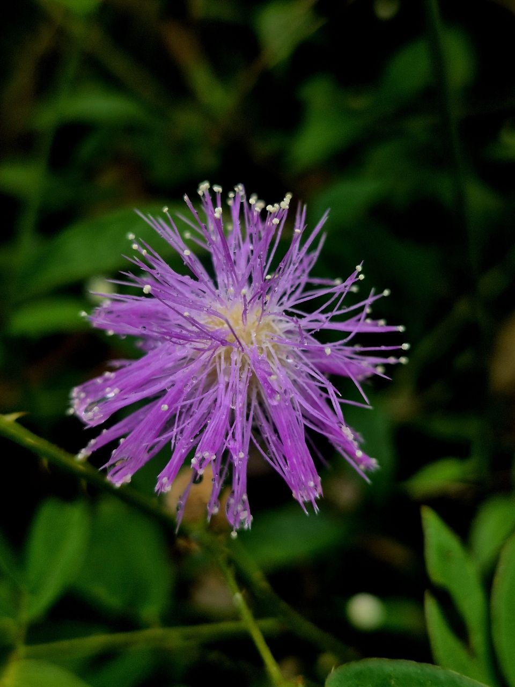
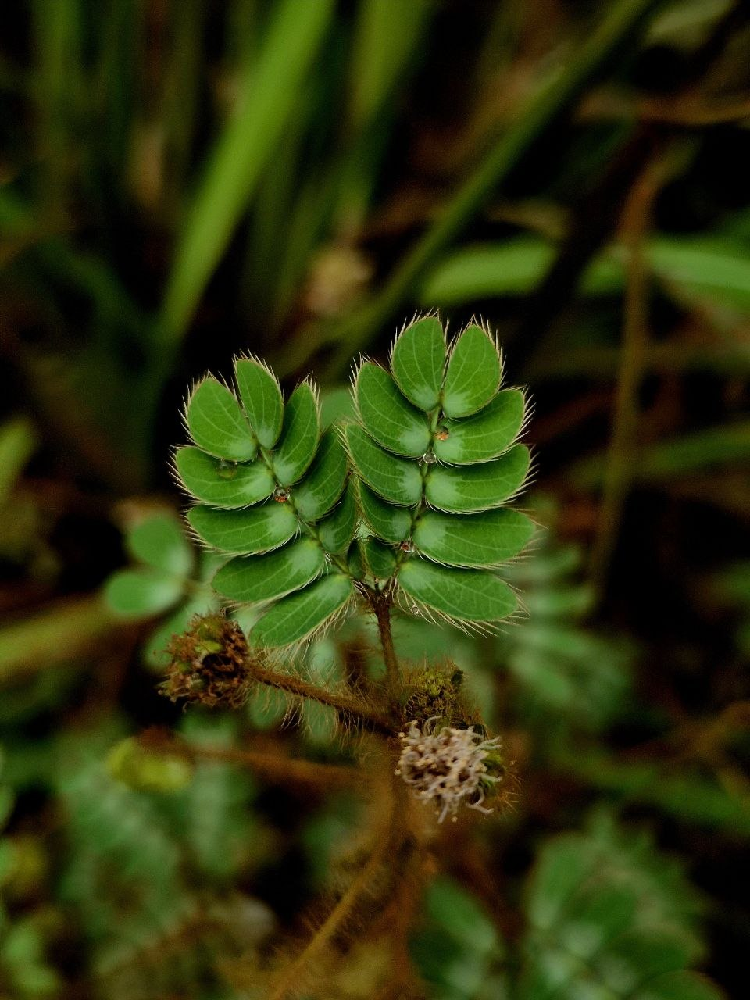
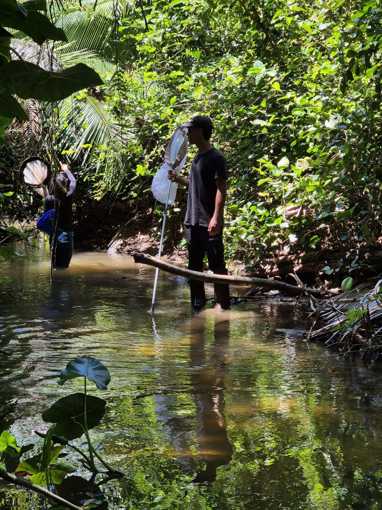
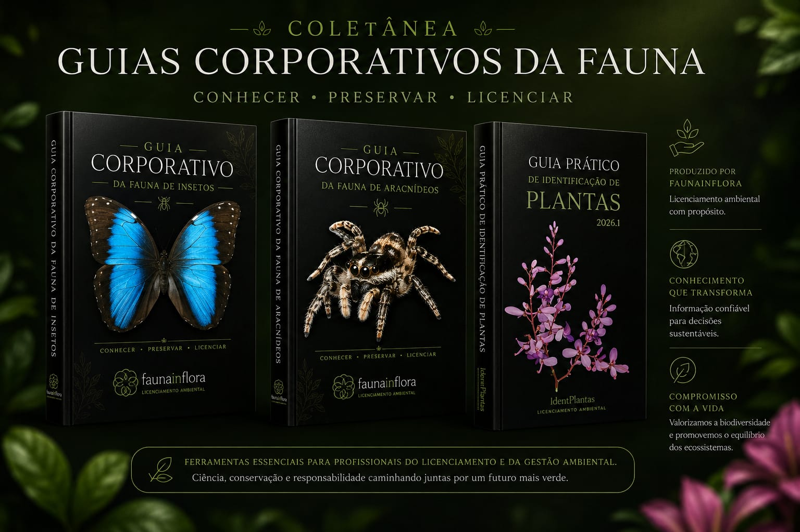

Acreditamos que...
O avanço em direção a um futuro sustentável e produtivo está intrinsecamente ligado à tomada de decisões conscientes no presente. A faunainflora transforma a biodiversidade do solo em dados estratégicos, impactando o agronegócio com boas práticas sociais, ambientais e de governança (ESG).
VISÃO
Ser reconhecida globalmente como autoridade em inteligência do solo e conservação da biodiversidade edáfica. Comprometidos em desenvolver soluções inovadoras para o agronegócio, estamos dedicados a incentivar nossos clientes a adotarem práticas regenerativas e obterem conformidade ESG de alto padrão.
MISSÃO
Promover a excelência no monitoramento ambiental ao criar e compartilhar modelos inovadores que traduzem a complexidade da fauna do solo em informação acionável. Nosso compromisso é atingir os mais elevados padrões de qualidade e eficácia, apoiando o licenciamento e a recuperação de áreas degradadas.
VALORES
Nosso compromisso absoluto com o respeito pela natureza e a precisão científica guia todas as nossas ações. Buscamos constantemente a transparência em nossos laudos técnicos e mapeamentos geoespaciais. Estamos comprometidos em garantir dados confiáveis que transformam passivos em ativos sustentáveis.




